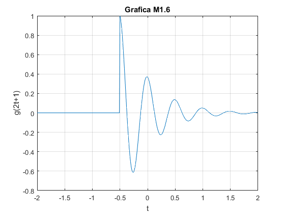

Práctica 2: Señales continuas
Contents
%Integrantes del equipo: Ortega Gonzalez Moises Donaldo, Ortiz Colin Cesar Antonio, Zarate Murillo Jose Antonio
Solucion Problema 1
%function [f] = fun1(a,w) %f= (a)./(a.^2+w.^2); %end
Solucion Problema 2
%Escribimos en el Command Window el intervalo de w W=-2:0.001:2; %y hacemos llamado a nuestra funcion que gráfica funciones de $f:R\rightarrow R$ a la cual nombramos como mifigura mifigura(W,fun1(1,W)) %hacemos llamado a fun1 puesto que debemos graficar f(w)vs w
Solucion Problema 3
%A continuacion se presentan las graficas respectivas a la solucion del problema dado
Fun3
Solucion Problema 4
%Se presentan las graficas obtenidas ademas del resultado de los problemas dados en el planteamiento
fun4
Primer resultado usando el comando sum
0.4367
Calculo usando la recursividad de Simpson
0
E_g =
0.2567
Segundo calculo usando el comando sum
0.2567
E_g2 =
0.2561
Derivacion del calculo anterior ,calculo con mas precision usando la recursividad de Simpson
0.2561
 Solucion Problema 5
%A continuacion se muestran las graficas que son la solucion del problema %1.2.2 fun5

Solucion Problema 6
%Esta función calcula la energía de una función anónima. %function [] = Energia_6(f) %Por lo tanto, se debe llamar a la función Energia_6(@(t) f(t)) %x = @(t)f(t).^2 ; %integral(x, -inf, inf) %end %a continuacion la solucion para el problema 1.1.3 inciso a Energia_6a %a continuacion la solucion para el problema 1.1.3 inciso b Energia_6b %a continuacion la solucion para el problema 1.1.3 inciso c Energia_6c
ans =
4.0000
ans =
4.0000
ans =
9.4248
ans =
9.4248
ans =
8.7124
ans =
0.7124
Solucion Problema 7
%Funcion de potencia codigo sin ejecutar %function [Px] = potencia(X,t2,t1) %A=isa(X,'function handle'); % if A==1 % t=t2:0.001:t1; % p=@(t) (X(t)).^2; % Px=(1/(t1-t2)).*(integral(p,t2,t1)); % else % syms tao; % Px=limit((1/(2*tao)).*(int(X.^2,-tao,tao)),tao,inf); % end %end %Ejecucion del codigo potencia7 para solucion de los incisos a,b,c del %problema1.1.4 Ej7
En cuanto al resultado de Pot1 , se utiliza el codigo de potencia7 ,previamente definido, aqui se muestra el calculo en cuanto al inciso a
Pot1 =
9.1429
se muestra el resultado en RMS inciso a
RMS1 =
3.0237
En cuanto al resultado de Pot2, es analogo al anterior solo que muestra el resultado del inciso b
Pot2 =
36.5714
se muestra el resultado en RMS inciso b
RMS2 =
6.0474
En cuanto al resultado de Pot3, es analogo al anterior solo que muestra el resultado del inciso c
Pot3 =
piecewise(c == 0, 0, c ~= 0, Inf*c^2)
se muestra el resultado en RMS inciso c
RMS3 =
piecewise(c == 0, 0, c ~= 0, Inf*(c^2)^(1/2))